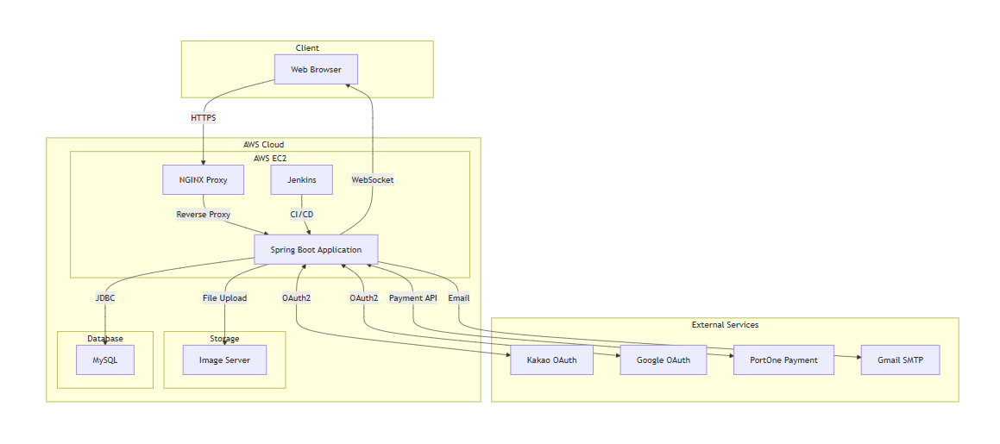

프론트엔드와 백엔드의 균형을 맞추며, 클린 코드와 협업을 지향하는 신입 풀스택 개발자입니다.
기술 스택
프로젝트
여기용 - 여행 카페 커뮤니티
소개:여행 정보 공유를 위한 커뮤니티 구축
핵심기능 - MY SQL 설계 및 구축 - CRUD 구현 - 화면 UI - 메인 화면 UI - 회원 가입 기능 - 로그인 화면 UI - 로그인 / 로그아웃 기능 - 프로필 수정 기능 - 게시글 검색 기능 - 좋아요 / 싫어요 / 댓글 기능 - 공지사항 / 인기글 기능 - 이전글 / 다음글 기능 - 페이징네이션 - 파일 업로드 / 다운로드 기능 - 인터셉터
담당역할 - MY SQL 설계 및 구축 - CRUD 구현 - 페이징네이션 - 로그인 화면 UI - 로그인, 로그아웃 - 댓글/ 좋아요/ 싫어요 기능 - 공지사항 / 인기글 기능 - 이전글 / 다음글 기능
OneStack - 외주 매칭 플랫폼
소개: 본 프로젝트는 IT와 관련된 외주 서비스를 온라인에서 쉽게 찾고 이용할 수 있도록 돕는 웹 애플리케이션을 개발하는 것을 목표로 합니다
핵심기능 1. 전문가 매칭 시스템 - 카테고리별 전문가 검색 및 필터링 - 포트폴리오 기반 전문가 프로필 - 견적 요청 및 매칭 시스템 2. 실시간 커뮤니케이션 - WebSocket 기반 실시간 채팅 - 프로젝트 진행 상황 공유 - 파일 첨부 및 공유 기능 3. 프로젝트 관리 - 일정 관리 캘린더 - 협업 게시판 - 진행 상황 트래킹 4. 결제 및 리뷰 - 안전한 결제 시스템 (포트원 연동) - 프로젝트 완료 후 리뷰 작성 - 전문가 평점 시스템 5. 회원 관리 - 전문가 전환 심사 - 회원 정보 접근 및 수정 - 신고 회원 기간정지/영구정지 처리
담당역할 - 전문가 포트폴리오 관리(CRUD) - 일반회원 전문가 전환 신청 - 전문가 신청 리스트 조회 - 전문가 전환 신청 관리자 승인/거부 처리 - 전문가 전환 승인 수정 처리 - 회원 정보 수정 - 신고 회원 조회 - 신고 수 증가 - 회원 및 게시물 신고 기능 - 신고 회원 및 게시물 비활성화/활성화 처리 - 회원 영구정지 / 기간정지 처리 - 기간정지 자동 해제 - 페이징 네이션
프로젝트 시스템 아키텍처
요기용 구현 서비스


연락처
Email: hunbok@gmail.com
GitHub: github.com/hunbok
LinkedIn: linkedin.com/in/hunbok